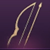

Throne and Liberty Best Weapon Combos Tier List
In Throne and Liberty, weapons are more than just tools they shape your entire playstyle. Instead of relying on a traditional class system, your weapon combination defines your role class, whether as a damage-dealer, tank, or healer.
With Seven Weapon Types and 21 possible combinations, the game offers flexibility and deep customization, allowing you to craft a unique build that suits your preferences.
Choosing the right class combination is about finding synergy between your mainhand and off-hand weapons. Some pairings excel in PvE, offering powerful AOE attacks, while others shine in PvP with fast damage or superior survivability. Understanding the strengths and weaknesses of these combinations is key to mastering your build.
However, not all combinations perform equally. Some lack synergy, making them less effective in combat, while others deliver unmatched power and versatility. While the game encourages experimentation, knowing which combos excel will help you optimize your performance.
In this tier list, we’ll highlight the best weapon combinations for various roles, so you can find the ideal setup for your playstyle.
D-Tier Weapon Combinations Tier List
These combinations are functional but suffer from poor synergy, conflicting playstyles, or limited damage output. They might be usable in certain situations but generally, they’re outclassed by higher-tier options.


Great Sword and Staff
This combination has strong AOE potential, but unfortunately, both weapons overlap in playstyle, which makes the setup inefficient. The great sword's slow, close-quarters combat doesn’t synergize well with the staff's ranged AOE capabilities. The lack of sustained single-target damage is a significant drawback, making this combination suboptimal for most PvE and PvP encounters.


Crossbow with Sword and Shield
While this combo provides decent survivability thanks to the sword and shield, it falls short on damage output. The crossbow's ranged capabilities don’t mesh well with the defensive nature of the sword and shield, leading to an overall lackluster performance in both DPS and tanking roles. The conflicting playstyles reduce your effectiveness in any role, making this combination underwhelming.

Great Sword and Wand
Much like the crossbow and sword combination, the great sword and wand combination suffers from conflicting roles. The great sword thrives in close-range AOE combat, while the wand specializes in healing and support. The lack of damage synergy makes it difficult to optimize your character for any specific role, resulting in a weak overall performance.
Crossbow and Wand
At first glance, this combination might seem promising, offering decent range and utility, but it ultimately falls short. The crossbow excels at sustained single-target damage, while the wand is better suited for healing and debuffing. Unfortunately, this setup makes it difficult to excel in either role. You’ll find yourself lacking both in terms of damage and support, leading to mediocre performance in endgame content.
C-Tier Weapon Combinations Tier List
C-tier combinations offer some utility but are largely overshadowed by better options. These combinations are viable, but players will often struggle to achieve optimal performance compared to higher-tier setups.

Great Sword and Longbow
This combination could have been higher on the list due to its potential for high damage. However, the synergy between the two weapons is lacking. The great sword focuses on close-range AOE attacks, while the longbow is built for long-range single-target damage. The lack of balance between offense and defense makes it difficult to justify this combination when there are stronger options available.
Great Sword and Crossbow
The Great Sword and Crossbow combination, while it offers a solid balance of damage and defensive stats, it falls short compared to more synergistic options. The great sword provides strong AOE attacks, and the crossbow adds decent ranged damage, but the lack of synergy between the two weapons limits its effectiveness. In particular, this combination doesn't match the burst damage and mobility offered by the great sword and dagger setup, making it a less optimal choice for both PvE and PvP scenarios.
Staff and Sword
Both weapons offer great utility, but their playstyles don’t complement each other. The staff is designed for ranged AOE damage, while the sword and shield focus on defense and melee combat. While you’ll have decent survivability, the lack of synergy between these weapons limits your damage output, making this combination lackluster for both PvE and PvP content.
Sword and Shield with Longbow
This is an "okay" combination that offers some survivability from the sword and shield, paired with ranged damage from the longbow. While it provides decent single-target damage from a distance, there are much better tank and DPS combinations available. This setup feels mediocre in both roles and lacks the potency of higher-tier combinations.
Sword and Shield with Staff
The sword and shield is built for tanking, while the staff excels at ranged damage. This combination offers some decent defensive abilities, but the lack of synergy between the two weapons is noticeable. You’ll struggle with DPS, and your tanking potential will feel subpar compared to higher-tier options. It’s not a bad combination for survival, but it’s not optimal for either role.
B-Tier Weapon Combinations Tier List
B-tier combinations offer solid performance in specific scenarios but may not be the best all-around choices. These setups are effective in certain roles but can be outshined by more specialized options in the higher tiers.

Sword and Shield with Daggers
This combination provides a balance between tanking and damage output. The sword and shield offers excellent survivability, while the daggers bring in quick, crit-based damage. This combination works well in both PvE and PvP, especially if you want to contribute to your team’s DPS while tanking. However, better tanking combinations exist, so it’s not quite the top choice.
Wand and Daggers
This versatile combination is great for players who want to blend support with damage. The wand offers healing and debuff capabilities, while the daggers provide high burst damage and mobility. While it’s a good choice for PvE, it may feel a bit weaker in PvP environments compared to other combinations. Still, this setup excels in content where both support and damage are needed.
Staff and Crossbow
The staff and crossbow combination provides excellent burst potential and decent AOE damage. The crossbow delivers strong single-target damage, while the staff complements this with AOE abilities. However, the combination lacks mobility, which can be a drawback in PvP. It’s still a solid choice for controlling zones in PvE, especially against large groups of enemies.
A-Tier Weapon Combinations Tier List
A-tier combinations are strong, versatile options that excel in both PvE and PvP. These setups offer excellent synergy, allowing you to specialize in your desired role and contribute effectively to your team.
Great Sword and Daggers
If you’re looking for a fast-paced, melee-oriented combination, great sword and daggers is one of the best choices. The great sword provides devastating AOE damage, while the daggers add mobility and crit-based attacks. This combination shines in PvP and PvE, offering high burst damage and agility. The only downside is the lack of range, but the daggers’ teleportation ability helps mitigate this issue.
Longbow and Crossbow
This combination is a ranged DPS player’s dream. Longbow and crossbow offer consistent single-target damage, low cooldowns, and strong debuff capabilities. While it may struggle against multiple enemies due to a lack of AOE, its single-target damage output is top-notch, making it one of the best choices for both PvE boss fights and PvP encounters.
Staff and Longbow
If you prefer long-range combat, the staff and longbow combination is ideal. This setup offers high single-target damage and AOE capabilities, making it one of the strongest options for ranged damage dealers. In PvE, it’s perfect for taking down difficult bosses, while in PvP, its range and power give you a significant advantage. The only downside is its lower survivability, but with proper positioning, this can be managed.
Longbow and Daggers
This combination turns you into a deadly assassin with exceptional mobility and strong single-target damage. Daggers give you the ability to teleport, close gaps, and evade attacks, while the longbow allows you to maintain distance and deal massive damage from afar. It’s a great choice for both PvE and PvP, though the lack of AOE capabilities can be a slight drawback.
Staff and Daggers
This combination blends high AOE damage with mobility. The staff provides strong ranged attacks, while the daggers allow you to move quickly and close gaps when needed. It’s a great choice for players who want to control the battlefield from a distance while still having the option to engage in close combat when necessary.
S-Tier Weapon Combinations Tier List
S-tier combinations are the best of the best, offering exceptional performance in every scenario. Whether you’re tanking, dealing damage, or healing, these combinations will help you excel in Throne and Liberty.
Longbow and Wand
This is the ultimate healer combination in the game. While it doesn’t deal much damage, its healing potential is unmatched. You’ll have access to the best healing abilities, making you invaluable in endgame content. In dungeons and raids, where survival is crucial, this combination is a must-have for keeping your team alive.
Crossbow and Daggers
The crossbow and daggers combination is the top choice for DPS players. With its multi-hit attacks from the crossbow and the debuffs and mobility from daggers, this combination delivers the highest damage output in the game. It’s perfect for both PvE and PvP, especially for players who prefer a more aggressive, fast-paced playstyle.
Sword and Great Sword
The sword and great sword combination is the best tanking setup in Throne and Liberty. You’ll have incredible survivability, strong crowd control, and access to powerful AOE attacks. This combination makes you a rock-solid tank for any endgame content, allowing you to soak up damage while controlling the battlefield with your powerful CC abilities.
Sword and Wand
This combination is often referred to as the "ultimate Paladin build." It combines the tanking capabilities of the sword and shield with the healing abilities of the wand, allowing you to play both roles effectively. You can heal your teammates while still maintaining your tank role, making this combination highly versatile and ideal for both PvE and PvP content.
Staff and Wand
For players who want to specialize in both DPS and healing, the staff and wand combination is the perfect choice. The staff provides powerful AOE damage, while the wand offers exceptional healing capabilities. This combination allows you to be a DPS-focused player who can also step in as a healer when needed, making it one of the most versatile builds in the game.
Conclusion
In Throne and Liberty, your choice of weapon combination is more important than ever. Each combination offers a unique playstyle, allowing you to tailor your experience to your preferred role. Whether you're a tank, DPS, or healer, the right weapon combination can make or break your performance in both PvE and PvP.
While this tier list offers guidance, the beauty of Throne and Liberty lies in its flexibility. Don’t be afraid to experiment with different combinations to find what suits your playstyle best. Whatever path you choose, mastering your weapons will unlock your full potential in this dynamic and immersive world.